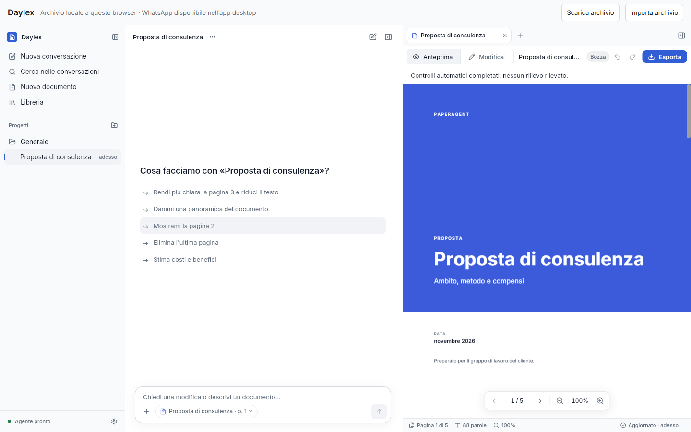

Il tuo lavoro.
Un passo avanti.
Scrivi, rivedi e condividi i tuoi documenti.
Il tuo spazio di lavoro, con Daylex.
Scegli il tuo dispositivo.
Windows 11Scarica l’appWindows 10Scarica l’app macOSScarica l’app
macOSScarica l’app LinuxScarica l’appiPhone e iPadiOS / iPadOS · App webApp web · PWAAndroid e computer
LinuxScarica l’appiPhone e iPadiOS / iPadOS · App webApp web · PWAAndroid e computer
Al primo accesso serve il codice del tuo studio.
Guida all’installazioneTutto a vista.
Un unico spazio.
Conversazione, modifiche e anteprima nello stesso spazio. Segui il documento mentre lo costruisci.

Parti dalle tue parole.
Chiedi una bozza o indica come vuoi modificare un documento. Non serve conoscere comandi particolari.
Rivedi con chiarezza.
Leggi il risultato, perfeziona i contenuti e controlla l’anteprima prima di condividerla.
Porta il lavoro fuori.
Quando sei soddisfatto, esporta il PDF e condividilo con chi deve riceverlo.
Il tuo spazio.
Pronto a seguirti.
App sul computer o app web sul tuo dispositivo.
Scegli come iniziare